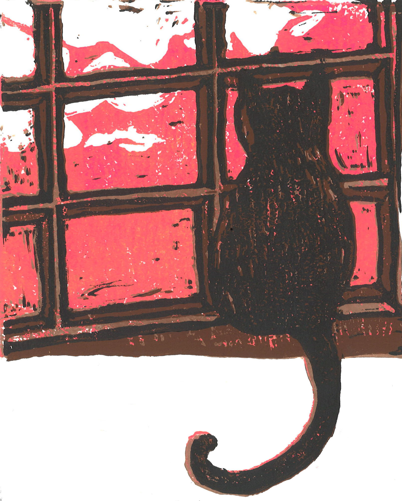
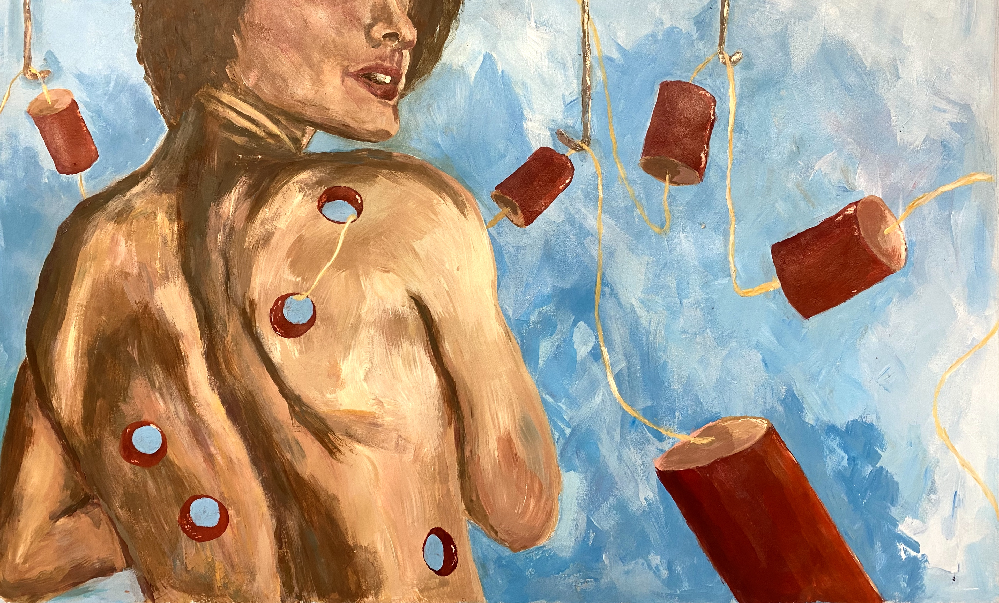

Getting Ready
Graphite on Paper, 2018
Brain Fried
Acrylic on Paper, 2019

Afternoon Coffee
Acrylic on Canvas, 2019
Heart
Acrylic on Paper, 2019

Lungs
Acrylic on Paper, 2019

House Prints
Collegraph Print on Paper, Mixed Media, 2019

If Only It Was Quiet
Oil Pastel on Paper, 2019
Spaced Out
Mixed Media, 2020
Lemon
Acrylic, 2020

The First Awake
Reductive Print on Paper, 2019

Cherry Gore
Acrylic on Paper, 2020
Moment of Rest
Mixed Media, 2020

Untangled
Acrylic on Paper, 2019
Carbon Dated
Mixed Media, 2020

Tourist
Acrylic on Canvas, 2019